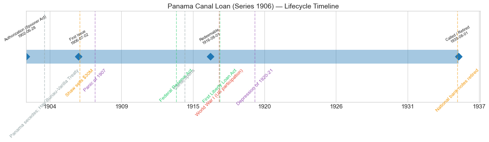
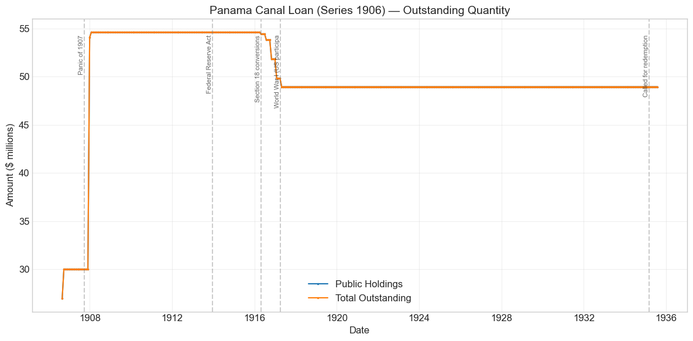
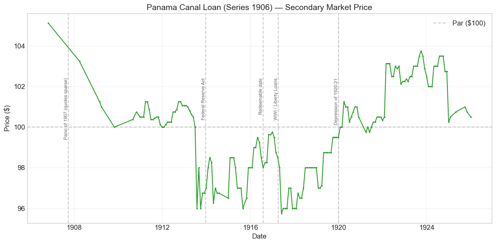
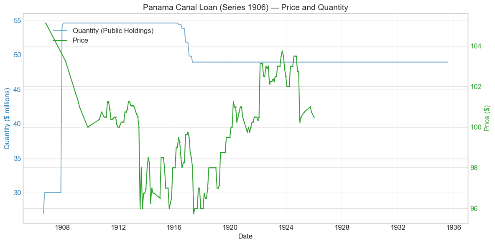
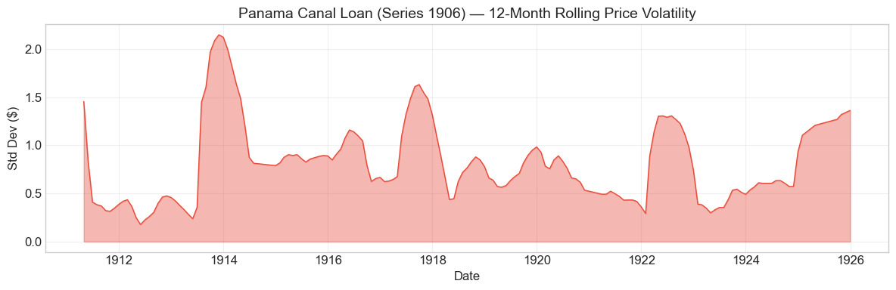

Bond Biography: Panama Canal Loan (Series 1906)#
Digging a Canal with the Banks’ Money#
An enhanced chapter from the Hall-Payne-Sargent US Federal Bond Database (2,857 issues, 1776–1960)
Bond ID (L1): 20132 | Category: Interest Bearing > Marketable > Panama Canal Bond
import pandas as pd
import numpy as np
import matplotlib.pyplot as plt
import matplotlib.patches as mpatches
import datetime
import warnings
warnings.filterwarnings('ignore')
plt.style.use('seaborn-v0_8-whitegrid')
plt.rcParams.update({'figure.figsize': (12, 6), 'font.size': 12,
'axes.titlesize': 14, 'axes.labelsize': 12})
# Load the bond database
store = pd.HDFStore('../data/BondDF.h5', mode='r')
BondList = store['BondList']
BondQuant = store['BondQuant']
BondPrice = store['BondPrice']
store.close()
BondQuant_T = BondQuant.transpose()
BondPrice_T = BondPrice.transpose()
bond_id = 20132
print(f'Loaded data for: Panama Canal Loan (Series 1906) (ID: 20132)')
/Users/thomassargent/anaconda3/lib/python3.9/site-packages/pandas/core/arrays/masked.py:60: UserWarning: Pandas requires version '1.3.6' or newer of 'bottleneck' (version '1.3.5' currently installed).
from pandas.core import (
Loaded data for: Panama Canal Loan (Series 1906) (ID: 20132)
A Ditch Between the Seas, Paid for on Credit#
The Panama Canal Loan (Series 1906) — Bond ID 20132 in our database — was the first bond the United States ever sold to build the Panama Canal, and one of the first large federal loans floated not to fight a war or refund old debt, but to pay for a thing: a specific, named capital asset whose construction Congress had authorized in advance. The authorizing statute was the Spooner Act of June 28, 1902, the law that committed the United States to the Panama route (over the rival Nicaragua route) and empowered the President to buy out the failed French canal company. Anticipating that the enterprise would cost far more than any year’s surplus could cover, the Act authorized the Secretary of the Treasury to borrow on the credit of the United States, as needed, up to $130 million — and it fixed the coupon at 2 percent, in gold bonds, redeemable after ten years and payable in thirty.
A 2 percent coupon on a thirty-year loan was, on its face, an absurdity. In 1902 no private borrower on earth — and no other sovereign — could sell long bonds at 2 percent. Congress could write that number into law only because it had already built the machine that would make such bonds sell at par: the circulation privilege. Under the National Banking Acts a bank issuing its own circulating notes had to deposit U.S. bonds with the Treasurer as security, and the Gold Standard Act of 1900 had cut the tax on circulation secured by 2 percent bonds to one-half of one percent — half the rate charged against higher-coupon bonds. National banks would therefore bid a 2 percent bond up to par and beyond, not for its coupon but for the note-issuing franchise that came stapled to it. The Panama 2s were designed from the outset to be sold into that captive demand. They are, with their elder sibling the Consols of 1930 (Bond ID 20131, whose chapter develops the economics of the circulation privilege in full), the purest examples in this database of bonds whose price was made by regulation rather than by the market’s rate of time preference.
The men who set the bond in motion were Theodore Roosevelt, who made the canal the signature project of his presidency, and his Treasury Secretary Leslie M. Shaw, who conducted the first sale in the summer of 1906. What makes the Series 1906 loan distinctive in the arc of American fiscal history is this pairing of the very new with the very old: the most ambitious public-works project the federal government had ever undertaken — an early and self-conscious experiment in earmarked, project-financed federal borrowing — funded through the creakiest piece of Civil War-era financial machinery, the bond-secured national bank note.
Historical Context: Canal Finance from the Spooner Act to 1935#
The following major events framed this bond’s lifetime:
Date |
Event |
Category |
|---|---|---|
1902-06-28 |
Spooner Act: Panama route chosen; $130M of 2% bonds authorized |
Legislation |
1903-11 |
Panama secedes from Colombia; Hay–Bunau-Varilla Treaty |
Diplomacy |
1904 |
U.S. pays $40M to the French canal company and $10M to Panama |
Fiscal |
1906-07/08 |
First Panama bond sale: $30M under Secretary Shaw |
Fiscal |
1907-10 to 1908-02 |
Panic of 1907; ~$24.6M more Panama 2s sold as emergency relief |
Crisis |
1913-12-23 |
Federal Reserve Act (Section 18: retirement machinery for the 2s) |
Legislation |
1914-08-15 |
Panama Canal opens to traffic |
Other |
1916-08-01 |
Bond becomes redeemable (ten-year date) |
Fiscal |
1917-04-06 to 1918-11-11 |
World War I (US participation); Liberty Loans |
War |
1920-01 to 1921-07 |
Depression of 1920–21 |
Crisis |
1935 |
Called with the Consols of 1930; national bank notes retired |
Fiscal/Monetary |
Why bonds, and not taxes#
The canal was a purchase of future revenue — tolls, commerce, naval mobility — whose benefits would accrue over generations, and Congress reasoned in classic project-finance terms: let the cost be spread over time by borrowing against the credit of the nation, rather than concentrated on the taxpayers of a few construction years. The Spooner Act therefore did two things at once. It appropriated funds for the immediate purchases — up to $40 million for the property and rights of the New Panama Canal Company, the successor to Ferdinand de Lesseps’s bankrupt French enterprise, and, after Panama’s secession from Colombia in November 1903, $10 million to the new Republic of Panama (plus a $250,000 annuity) under the Hay–Bunau-Varilla Treaty — and it authorized borrowing to replenish the Treasury as the money went out. In the event, the flush Treasury of 1904 paid the $50 million of acquisition costs out of its general fund, and borrowing waited until construction spending began to bite. When Secretary Shaw finally opened bids in the summer of 1906, the loan was explicitly labeled and booked as a Panama Canal loan — the proceeds earmarked, in political understanding if not in strict fungibility, to the canal. Little of this earmarking survived close inspection (money is fungible, and the canal ultimately drew on general revenues and later bond series as well), but the label mattered: it framed federal borrowing as investment in a revenue-producing asset, a rhetorical template that would echo in twentieth-century infrastructure finance.
The 1906 sale: the banks queue up#
Shaw invited public bids for $30 million of the 2s in mid-1906 (the database dates first issue to July 2, 1906, with the bonds dated August 1, 1906 — redeemable August 1, 1916, payable August 1, 1936). The subscription was heavily oversubscribed, and the awards went overwhelmingly to national banks. The database records the average price obtained as 104.036 — a premium of about 4 points on a 2 percent bond, at a time when the best railroad bonds yielded roughly 4 percent. No investor buying on coupon and maturity alone would have paid it. The banks were not buying a 2 percent investment; they were buying collateral for note circulation, taxed at the concessionary ½ percent rate, exactly as they had bid the Consols of 1930 above par six years earlier. The premium over par is the capitalized value of the circulation franchise, and the whole subsequent price history of this bond should be read through that lens.
The Panic of 1907: a bond sale as a fire hose#
The bond’s one dramatic quantity event is a monument to the crisis of October–November 1907. When the panic froze the New York money market, Treasury Secretary George B. Cortelyou reached for the only currency-expanding lever the pre-Federal Reserve system offered: he offered additional Panama Canal 2s (together with 3 percent certificates of indebtedness), precisely because every dollar of 2s placed with a national bank could become nearly a dollar of new bank-note circulation. Of $50 million offered, roughly $24.6 million of the Panama bonds were actually taken up — visible in our data as the +80 percent jump in outstanding quantity in December 1907 and January 1908, which carried the loan to its all-time peak of $54.6 million. The episode is doubly instructive. It shows the bond-secured currency working as its designers hoped — bond sales as monetary policy — and it shows how feebly: the relief was late, indirect, and small against the scale of the panic, and the whole apparatus stood indicted. The Aldrich–Vreeland Act (1908) and the National Monetary Commission followed, and five years later the Federal Reserve Act. Notably, the panic left almost no trace in this bond’s price — partly because its holders were the very banks that wanted it for circulation, and partly because quotations for the issue in 1907 are sparse in our sources (there is a gap in the price series between late 1906 and early 1908), so caution is warranted in reading anything into those months.
The Federal Reserve Act, the war, and the long twilight#
The Federal Reserve Act of December 23, 1913 created an elastic currency and thereby scheduled the extinction of the bond-secured national bank note — and with it, the sole reason the Panama 2s traded near par. As the legislation moved through Congress in mid-1913, the bond slipped from just above 100 to about 96 — its counterpart to the Consols’ contemporaneous slide to their all-time low — before Section 18’s compensation machinery (gradual purchase of the 2s by Federal Reserve Banks and conversion into 3 percent bonds without the circulation privilege) reassured holders. Those Section 18 conversions are plainly visible in the quantity series: five step-downs between April 1916 and April 1917 totaling about $5.7 million, reducing the loan from $54.6 million to $48.95 million — where it froze, because American entry into World War I suspended the program permanently. The bond’s ten-year redemption date, August 1, 1916, passed without a call: a loan costing the Treasury 2 percent, wanted by the banks, was in no one’s interest to disturb. The wartime years mark the price’s lifetime low, 95.75 in May 1917, as the First Liberty Loan reset the whole level of government yields; but as in the Consols’ story, high postwar market rates fattened the profit on note circulation, and the 2s climbed back above par in 1920 — a franchise repricing, not a credit event — and drifted up to about 103½ in 1924 before regular quotation faded out at the end of 1925.
The end, 1935#
The quantity series runs flat at $48.95 million for eighteen more years — the bonds locked in the Treasurer’s vaults as note collateral — through the 1920s, the banking collapse, and the New Deal’s monetary reconstruction. In 1935 the Treasury, drawing on the book profit from the 1934 devaluation of the gold dollar, called the 2 percent Consols and the Panama Canal 2s; the Series 1906 bonds were redeemed on their quarterly date in the summer of 1935 (our quantity series ends in July 1935, on the eve of the August 1 redemption), and with the last eligible bonds retired, the national bank note itself passed out of issue. The bond that had been sold to dig a canal ended its life, fittingly, as a piece of monetary plumbing dismantled alongside the currency system it secured.
# Bond Lifecycle Timeline
fig, ax = plt.subplots(figsize=(14, 4))
# Key dates
dates = [('Authorization (Spooner Act)', '1902-06-28'), ('First Issue', '1906-07-02'),
('Redeemable', '1916-08-01'), ('Called / Retired', '1935-08-01')]
events = [('Panama secedes; Hay-Bunau-Varilla Treaty', '1903-11-18', 'other'), ('Shaw sells $30M', '1906-08-01', 'monetary'), ('Panic of 1907', '1907-10-01', 'crisis'), ('Federal Reserve Act', '1913-12-23', 'legislation'), ('Canal opens', '1914-08-15', 'other'), ('World War I (US participation)', '1917-04-06', 'war'), ('First Liberty Loan Act', '1917-04-24', 'legislation'), ('Depression of 1920-21', '1920-01-01', 'crisis'), ('National bank notes retired', '1935-07-01', 'monetary')]
import matplotlib.dates as mdates
from datetime import datetime
# Plot bond lifetime bar
d0 = datetime.strptime(dates[0][1], '%Y-%m-%d')
d1 = datetime.strptime(dates[-1][1], '%Y-%m-%d')
ax.barh(0, (d1 - d0).days, left=mdates.date2num(d0), height=0.3,
color='#1f77b4', alpha=0.4, label='Bond Lifetime')
# Mark key dates
for label, date_str in dates:
d = datetime.strptime(date_str, '%Y-%m-%d')
ax.plot(mdates.date2num(d), 0, 'D', color='#1f77b4', markersize=10)
ax.annotate(f'{label}\n{date_str}', (mdates.date2num(d), 0.25),
ha='center', va='bottom', fontsize=8, rotation=30)
# Mark historical events
colors = {'war': '#e74c3c', 'crisis': '#9b59b6', 'legislation': '#2ecc71', 'other': '#95a5a6', 'monetary': '#f39c12'}
for name, date_str, cat in events:
d = datetime.strptime(date_str, '%Y-%m-%d')
ax.axvline(mdates.date2num(d), color=colors.get(cat, 'gray'), alpha=0.5, linestyle='--')
ax.annotate(name, (mdates.date2num(d), -0.25), ha='center', va='top',
fontsize=10, rotation=45, color=colors.get(cat, 'gray'))
ax.set_yticks([])
ax.xaxis.set_major_formatter(mdates.DateFormatter('%Y'))
ax.set_title('Panama Canal Loan (Series 1906) — Lifecycle Timeline')
ax.set_ylim(-1, 1)
plt.tight_layout()
plt.show()

Bond Features#
Feature |
Detail |
|---|---|
Name |
Panama Canal Loan (Series 1906) |
Authorizing Act |
Spooner Act, June 28, 1902 (borrowing authority capped at $130 million of 2% bonds) |
First Issue Date |
July 2, 1906 (bonds dated August 1, 1906) |
Term |
10/30 years: redeemable after August 1, 1916; payable August 1, 1936 |
Coupon Rate |
2.0% |
Payment Frequency |
Quarterly (4 times/year) |
Payable In |
Gold coin |
Callable |
Yes (after the ten-year date) |
Price Sold |
104.036 average (a 4-point premium on a 2% bond — the circulation privilege capitalized) |
Peak Outstanding |
$54.63 million (January 1908, after the Panic of 1907 emergency sale) |
Special Privilege |
Security for national bank note circulation, taxed at only ½% per annum |
Final Disposition |
Called with the Consols of 1930; redeemed summer 1935 |
# Display full bond features from database
row = BondList.loc[20132]
display_cols = [
"Treasury's Name Of Issue", 'Authorizing Act', 'Term Of Loan',
'First Issue Date', 'Redeemable After Date', 'Payable Date',
'Coupon Rate', 'Coupons Per Year', 'Callable', 'Coin',
'Authorized Amount', 'Price Sold'
]
print('Bond Features from Database:')
print('=' * 55)
for col in display_cols:
if col in row.index:
print(f' {col:<30} {row[col]}')
Bond Features from Database:
=======================================================
Treasury's Name Of Issue Panama Canal Loan (Series 1906)
Authorizing Act June 28, 1902
Term Of Loan 30 years
First Issue Date 1906-07-02 00:00:00
Redeemable After Date 1916-08-01 00:00:00
Payable Date 1936-08-01 00:00:00
Coupon Rate 2.0
Coupons Per Year 4.0
Callable 1.0
Coin 1.0
Authorized Amount nan
Price Sold 1.04036
Bond Quantity Over Time#
The bond’s outstanding quantity peaked at $54.63 million on January 31, 1908. Data span August 1906 to July 1935 (348 monthly observations) — a decade longer than the price series, because the bonds remained quietly on the government’s books, immobilized as note collateral, long after active quotation had ceased.
# Bond quantity over time
fig, ax = plt.subplots(figsize=(12, 6))
for stype in ['Public Holdings', 'Total Outstanding']:
try:
s = BondQuant_T.loc[(20132, stype)]
s = s[s.notna()]
if len(s) > 0:
ax.plot(s.index, s.values / 1e6, marker='.', markersize=3, linewidth=1.5, label=stype)
except KeyError:
pass
ax.set_title('Panama Canal Loan (Series 1906) — Outstanding Quantity')
ax.set_xlabel('Date')
ax.set_ylabel('Amount ($ millions)')
ax.legend()
ax.grid(True, alpha=0.3)
events = {'1907-10-01': 'Panic of 1907', '1913-12-23': 'Federal Reserve Act', '1916-04-30': 'Section 18 conversions', '1917-04-06': 'World War I (US participa', '1935-03-01': 'Called for redemption'}
for date_str, label in events.items():
d = pd.Timestamp(date_str)
ax.axvline(d, color='gray', alpha=0.4, linestyle='--')
ax.text(d, ax.get_ylim()[1]*0.97, label, rotation=90, va='top', ha='right', fontsize=8, alpha=0.7)
plt.tight_layout()
plt.show()

Quantity Analysis: Two Steps Up, Five Steps Down, and Eighteen Years of Silence#
The quantity series is short on incident but every incident is legible.
The first step, 1906. The loan opens in August 1906 at about $27 million and completes at $30 million in September — Secretary Shaw’s inaugural sale, the first canal borrowing under the Spooner authorization, delivered to subscribing banks as their payments came in.
The second step, 1907–08. The +$24.6 million surge of December 1907 and January 1908 is Secretary Cortelyou’s Panic of 1907 emergency sale, described above: additional 2s issued not because the canal suddenly needed the money, but because the banking system needed collateral against which to expand note circulation. This is the auto-detected +80.3 percent quantity event, and it carried the loan to its permanent peak of $54.63 million. It is a curiosity worth savoring that the larger half of a canal loan was sold as an instrument of monetary policy.
The five steps down, 1916–17. The only reductions in the loan’s history — roughly $0.2M, $0.6M, $2.0M, $2.0M, and $0.9M between April 1916 and April 1917, about $5.7 million in all — are the operation of Section 18 of the Federal Reserve Act, under which Federal Reserve Banks acquired 2 percent bonds from member banks and converted them into 3 percent obligations without the circulation privilege (the “Conversion Bonds” that appear among this bond’s relatives below). The program was designed to retire the whole 2 percent family over about twenty years; American entry into the war suspended it after these first installments, and it never resumed.
The silence, 1917–1935. From April 1917 the series is a flat line at $48.95 million — through the Liberty Loans, the 1920–21 depression, the passing of the August 1916 redeemable date without a call, and the banking crises of the early 1930s. The bonds sat in the Treasurer’s vaults securing national bank notes, neither growing nor shrinking, until the Treasury’s 1935 call. The series ends in July 1935, on the eve of the redemption that retired the Panama 2s alongside the Consols of 1930 and, with them, the national bank note itself.
Secondary Market Prices#
Overall Statistics (1906-10-31 to 1925-12-31): Mean $99.85, Range $95.75–$105.12, Std Dev $2.17, 173 observations.
By Period:
Period |
Mean |
Std |
Min |
Max |
Obs |
|---|---|---|---|---|---|
Issue to end of quotations (1906-10 to 1925-12) |
$99.85 |
$2.17 |
$95.75 |
$105.12 |
173 |
Read these numbers the way the Consols of 1930 chapter teaches: a 2 percent thirty-year bond averaging within fifteen cents of par, across two decades in which prime corporate bonds yielded 4 percent and Liberty bonds 3½ to 4¼, is not a statement about the riskless rate. It is the price of a bundle — a small coupon plus a national bank note-issuing franchise — and its fluctuations track the fortunes of the franchise. The bond opens at its all-time high, $105.12 in October 1906, just above the 104 average of Shaw’s sale; it decays gently as eligible supply grows (the Panic sale of 1907, then the Series 1908 sister issue); it breaks below par in mid-1913 as the Federal Reserve legislation threatens the franchise, touching 96; it reaches its lifetime low of $95.75 in May 1917 as the Liberty Loans reset government yields; and then — the same seeming perversity as the Consols — it recovers above par in 1920–24, when high market rates made note issue unusually profitable and banks bid up the scarce stock of eligible 2s. Quotations end in December 1925 at $100.50, a bond settling onto its redemption value. One caution: the series has gaps, notably from November 1906 to February 1908, so the Panic of 1907 itself is simply not observed in the price data; the flat spots and missing months reflect thin trading in an issue whose float was locked up as note collateral, and small moves in sparse months should not be over-read.
# Annotated price chart
fig, ax = plt.subplots(figsize=(12, 6))
s = BondPrice_T.loc[(20132, 'Average')]
s = pd.to_numeric(s, errors='coerce').dropna()
if len(s) > 0:
ax.plot(s.index, s.values, marker='.', markersize=3, linewidth=1.5, color='#2ca02c')
ax.axhline(100, color='black', alpha=0.2, linestyle='--', label='Par ($100)')
ax.set_title('Panama Canal Loan (Series 1906) — Secondary Market Price')
ax.set_xlabel('Date')
ax.set_ylabel('Price ($)')
ax.legend()
ax.grid(True, alpha=0.3)
events = {'1907-10-01': 'Panic of 1907 (quotes sparse)', '1913-12-23': 'Federal Reserve Act', '1916-08-01': 'Redeemable date', '1917-04-06': 'WWI / Liberty Loans', '1920-01-01': 'Depression of 1920-21'}
for date_str, label in events.items():
d = pd.Timestamp(date_str)
ax.axvline(d, color='gray', alpha=0.4, linestyle='--')
ax.text(d, ax.get_ylim()[1]*0.97, label, rotation=90, va='top', ha='right', fontsize=8, alpha=0.7)
plt.tight_layout()
plt.show()

# Price and Quantity — dual-axis chart
fig, ax1 = plt.subplots(figsize=(12, 6))
# Quantity (left axis)
for stype in ['Public Holdings', 'Total Outstanding']:
try:
q = BondQuant_T.loc[(20132, stype)]
q = q[q.notna()]
if len(q) > 0:
ax1.plot(q.index, q.values / 1e6, color='#1f77b4', alpha=0.6, label=f'Quantity ({stype})')
break
except KeyError:
pass
ax1.set_xlabel('Date')
ax1.set_ylabel('Quantity ($ millions)', color='#1f77b4')
ax1.tick_params(axis='y', labelcolor='#1f77b4')
# Price (right axis)
ax2 = ax1.twinx()
p = BondPrice_T.loc[(20132, 'Average')]
p = pd.to_numeric(p, errors='coerce').dropna()
if len(p) > 0:
ax2.plot(p.index, p.values, color='#2ca02c', marker='.', markersize=2, label='Price')
ax2.set_ylabel('Price ($)', color='#2ca02c')
ax2.tick_params(axis='y', labelcolor='#2ca02c')
ax1.set_title('Panama Canal Loan (Series 1906) — Price and Quantity')
ax1.grid(True, alpha=0.3)
fig.legend(loc='upper left', bbox_to_anchor=(0.1, 0.9))
plt.tight_layout()
plt.show()

Detected Price/Quantity Events, Explained#
Only one movement in three decades was large enough to trip the database’s event detector — itself a telling fact about a bond whose price was administratively propped and whose float was locked in Treasury vaults:
Date |
Type |
Change |
Explanation |
|---|---|---|---|
1907-12 |
Quantity increase |
+80.3% |
Secretary Cortelyou’s Panic of 1907 emergency sale. With the New York money market frozen, the Treasury offered additional Panama 2s so that national banks could deposit them and expand note circulation — the only currency-elasticity lever the pre-Federal Reserve system possessed. About $24.6 million were taken up in December 1907 and January 1908, lifting the loan to its permanent peak of $54.6 million. A canal bond, sold as a fire hose. |
The quieter movements the detector ignores are nonetheless interpretable, and the interpretation is the same throughout: the franchise, not the credit. The slide from 100½ to 96 in July 1913 tracks the congressional progress of the Glass bill — the market pricing the possible extinction of the circulation privilege — and the partial recovery through 1914–16 followed the reassurance of Section 18’s gradual conversion machinery. The sag to the lifetime low of 95.75 in May 1917 coincides with the First Liberty Loan, which reset the entire level of government yields; that a 2 percent bond lost only nine points from its 1906 peak in a world suddenly full of 3½ percent government bonds is itself proof that its holders were not pricing the coupon. The climb back above par from 1920 — to 101¼ in March 1920 and roughly 103½ by mid-1924 — mirrors the Consols’ postwar jump: high market interest rates made note circulation more profitable, and bank demand tightened on the fixed stock of eligible 2s. The step down from 103½ to 100¼ at the end of 1924 and the flat ride at 100–101 through 1925 look like the premium amortizing as the market looked ahead to eventual retirement, though with quotations this sparse we are inclined to attribute some of the month-to-month jitter to thin markets and quotation practice rather than to news.
Price Volatility#
Maximum drawdown: −8.9% (from the peak of $105.12 on October 31, 1906 to the trough of $95.75 on May 31, 1917)
Average monthly return: −0.023%
These are among the most placid numbers in the database — compare the −27.9 percent wartime collapse of the Louisiana Sixes — and even this modest “drawdown” took more than a decade to unfold, spanning the Panic of 1907, the Federal Reserve legislation, and American entry into a world war. As with the Consols of 1930, the volatility chart below measures the stability of a regulation more than of a market: the visible flares cluster around 1913 (the franchise threatened) and 1917 (the Liberty Loan repricing), while the Panic of 1907 — which convulsed every other market in New York — appears here mainly as a gap in the quotations.
# Rolling volatility (12-month window)
p = BondPrice_T.loc[(20132, 'Average')]
p = pd.to_numeric(p, errors='coerce').dropna()
if len(p) >= 12:
rolling_std = p.rolling(window=12).std().dropna()
fig, ax = plt.subplots(figsize=(12, 4))
ax.fill_between(rolling_std.index, rolling_std.values, alpha=0.4, color='#e74c3c')
ax.plot(rolling_std.index, rolling_std.values, color='#e74c3c', linewidth=1)
ax.set_title('Panama Canal Loan (Series 1906) — 12-Month Rolling Price Volatility')
ax.set_xlabel('Date')
ax.set_ylabel('Std Dev ($)')
ax.grid(True, alpha=0.3)
plt.tight_layout()
plt.show()
else:
print('Insufficient data for rolling volatility (need >= 12 observations)')

Issuance, Distribution, and Redemption#
The 1906 sale. Secretary Shaw invited public bids for $30 million of the bonds in the summer of 1906; the offering was heavily oversubscribed, and the awards were made at an average of about 104 (the database records 1.04036 per dollar of face value). The buyers were overwhelmingly national banks, and the bonds went promptly on deposit with the Treasurer of the United States as security for circulating notes — which is why the tradeable float was thin from the very start. Retail investors had no reason to compete: to a household, a 2 percent bond at 104 yielded well under 2 percent, the lowest running return of any security in the country; only a bank armed with the ½ percent circulation tax could make the arithmetic pay.
The 1907 emergency issue. The second tranche — roughly $24.6 million taken up in December 1907 and January 1908, out of $50 million offered — was Cortelyou’s panic-relief operation, placed with banks for the express purpose of expanding note circulation. That the offering went undersubscribed in the middle of a currency famine is itself evidence of the mechanism’s clumsiness: banks scrambling for cash were in a poor position to pay a premium for bonds, however privileged.
Servicing and the redeemable date. Interest at 2 percent was paid quarterly in gold. The bonds became redeemable at the government’s option on August 1, 1916; the Treasury, borrowing at 2 percent from a willing constituency, unsurprisingly declined to call them, and the war soon gave it far larger debts to manage. The only principal reductions before the end were the Section 18 conversions of 1916–17 (about $5.7 million exchanged into 3 percent conversion bonds and one-year notes), after which the loan stood frozen at $48.95 million.
Redemption, 1935. In the spring and summer of 1935 the Treasury — financed in part by the profit from the 1934 gold revaluation, and intent on retiring the now-redundant national bank note — called the 2 percent family. The Panama Canal 2s of Series 1906 were paid off at par in the summer of 1935 (the gold-coin clause by then abrogated, like all such clauses, by the Joint Resolution of June 1933), and as the deposited bonds came out of the Treasurer’s vaults, the bank notes they secured were retired from circulation. Every dollar of principal and every quarterly coupon had been paid in full.
Implications and Legacy#
An early experiment in earmarked federal project finance. The Panama loans were among the first U.S. federal bonds tied by statute and by name to a specific capital project. The Spooner Act’s logic — spread the cost of a long-lived, revenue-producing asset across time by borrowing, rather than tax it out of a few construction budgets — is the ordinary logic of infrastructure finance today, but in 1902 it was a departure for a federal government that had historically borrowed for wars and refunded in peace. The canal ultimately cost the United States on the order of $375 million to build, of which the bond issues under the canal acts financed a substantial part and general revenues the rest; the precise earmarking was always somewhat notional, but the precedent — the named project bond — was set, and the “Panama Canal Bond” received its own category in the Treasury’s accounts, as it does in this database.
The circulation privilege’s second act, and its indictment. The Panama 2s demonstrate both the power and the poverty of the bond-secured currency. The power: the Treasury borrowed thirty-year money at 2 percent — above par — a feat no market pricing of time and risk could deliver, because it had bundled the loan with a banking license. The poverty: when the system was tested in October 1907, the best the Treasury could do was sell more canal bonds into a panic, a fire hose connected by a long and narrow pipe. The Panic’s lesson — that a currency whose quantity depended on the federal debt could not breathe with the needs of trade — produced Aldrich–Vreeland, the National Monetary Commission, and the Federal Reserve; and the Federal Reserve, in turn, scheduled the extinction of the very mechanism that had priced these bonds. Few securities have been so directly the beneficiary, the instrument, and finally the casualty of a single monetary regime.
A caution for users of these data. For most of its quoted life this bond’s price hovers within a few dollars of par while its true investment yield to a non-bank holder was the lowest in the United States. As with the Consols of 1930, any yield curve for 1906–1925 built naively on the Panama 2s would show the Treasury borrowing long below 2 percent while railroads paid 4 — a wedge that measures the capitalized note-issuing franchise, not the riskless rate. This is precisely the problem Payne, Szőke, Hall & Sargent (2025) confront in estimating the government’s cost of borrowing under the gold standard, and this bond is one of its cleanest exhibits.
The quiet end of a loud project. The canal the bond financed opened in August 1914 — two weeks after the guns of that month began firing in Europe — and became exactly the strategic and commercial asset its projectors promised. The bond itself outlived its purpose by two decades, frozen in Treasury vaults as note collateral, and died in 1935 not because the canal failed but because the currency system it secured was dismantled. Of the $48.95 million outstanding at the call, every dollar was paid. It is a fitting biography for the era: the bond that helped dig the canal is remembered, when it is remembered at all, as a footnote to the history of American money.
References#
Primary Sources#
An Act to provide for the construction of a canal connecting the waters of the Atlantic and Pacific oceans (Spooner Act), June 28, 1902 — especially the borrowing authority for up to $130 million of 2 percent bonds.
Hay–Bunau-Varilla Treaty (Convention between the United States and the Republic of Panama), November 18, 1903.
Gold Standard Act, March 14, 1900 (the ½ percent circulation tax on 2 percent bonds).
Federal Reserve Act, December 23, 1913, especially Section 18 (refunding of the 2 percent bonds).
Annual Reports of the Secretary of the Treasury, 1902–1935 — especially the reports of Leslie M. Shaw (1906) on the first Panama bond sale, George B. Cortelyou (1907) on the panic-relief measures, and Henry Morgenthau, Jr. (1935) on the retirement of the 2 percent bonds and national bank notes.
Annual Reports of the Comptroller of the Currency, 1900–1935 (bonds on deposit as security for circulation).
Scholarly Works#
Friedman, M. & Schwartz, A. J. (1963). A Monetary History of the United States, 1867–1960. Princeton: Princeton University Press. (Chs. 4 and 8 on the Panic of 1907 and the 1930s retirement of the national bank notes.)
Noyes, A. D. (1909). Forty Years of American Finance. New York: G. P. Putnam’s Sons. (On Treasury policy under Shaw and the crisis of 1907.)
Timberlake, R. H. (1993). Monetary Policy in the United States: An Intellectual and Institutional History. Chicago: University of Chicago Press. (On the bond-secured currency and Treasury relief operations.)
Homer, S. & Sylla, R. (2005). A History of Interest Rates, 4th ed. Hoboken: Wiley. (On the anomalously low quoted yields of the circulation-privilege 2s.)
McCullough, D. (1977). The Path Between the Seas: The Creation of the Panama Canal, 1870–1914. New York: Simon & Schuster. (Canal history: the French failure, the route decision, the Panama revolution, and construction.)
Payne, J., Szoke, B., Hall, G. & Sargent, T. (2025). “Costs of Financing US Federal Debt Under a Gold Standard: 1791–1933.” Quarterly Journal of Economics.
General Histories#
Dewey, D. R. (1918). Financial History of the United States. New York: Longmans, Green and Co.
Studenski, P. & Krooss, H. E. (1952). Financial History of the United States. New York: McGraw-Hill.
See also, in this database, the companion chapter on the Consols of 1930 (Bond ID 20131), which develops the economics of the circulation privilege that priced this bond, and the chapters on the Panama Canal Loans of Series 1908 and Series 1911, which carry the canal-finance story forward.
Enhanced Bond Biography generated from the Hall-Payne-Sargent Bond Database. Narrative enrichment draws principally on the Spooner Act, the Annual Reports of the Secretary of the Treasury, Noyes (1909), Friedman & Schwartz (1963), Timberlake (1993), and McCullough (1977).